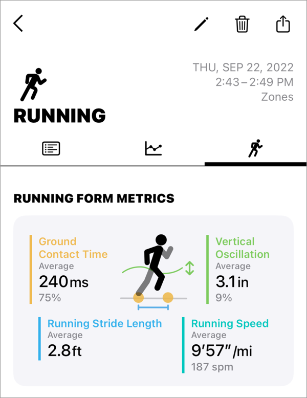

Help
Running Form Metrics

When you run outdoors, your running form metrics are recorded in your workout.
Running Form Metrics will appear on the third tab of your workout details.
Require for measurement
- watchOS 9.0 or later
- Zones version 6.0 or later
- Permission to read and write Running Form Metrics related items
Troubleshooting
Running Form Metrics not recorded
- No metrics are recorded for "indoor" runs.
- Make sure you have watchOS 9 or later and Zones Version 6 or later.
-
Confirm that both "read" and "write" permissions for the following items are allowed in Apple Health.
- Vertical Oscillation
- Ground Contact Time
- Running Stride Length
- Running Speed
- "Read" and "Write" are represented by separate switches (rows). Both should be ON.
- If there is no "write" permission switch (no line) in Health, please try request permission for all items.
Running speed is recorded, but other items are not.
Running Form Metrics will not be recorded when you are not running, such as when you are walking.
This decision is made by watchOS.
Metrics are not displayed for workouts recorded with other apps
Other apps must support recording of Running Form Metrics.
Wrong value
Running Form Metrics are calculated by watchOS
To ensure your Watch works properly, please try the following: